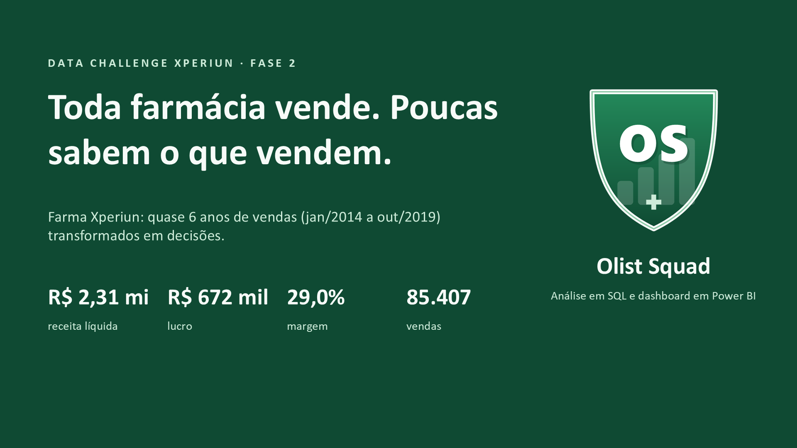

Apresentação executiva
Seis slides para a diretoria, sem código. Use as setas do teclado ou os botões; as notas de quem apresenta aparecem abaixo.

Seis slides para a diretoria, sem código. Use as setas do teclado ou os botões; as notas de quem apresenta aparecem abaixo.
